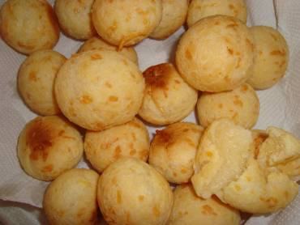

Salgados
- 
Imagem do Pão de Queijo mineiro.
- Pão de Queijo
- Gostoso pão de queijo mineiro.
- Autor: Atur Oliveira
- Avaliação: 5
- 71 pessoas avaliaram essa receita

Imagem da barquinha.- Barquinha
- Barquinha recheada com salada de maionese. Uma delícia!
- Autor: Silvia Martins
- Avaliação: 3
- 43 pessoas avaliaram essa receita

Imagem da coxinha de frango.- Coxinha de Frango
- Deliciosa coxinha recheada de frango.
- Autor: Letícia Campos
- Avaliação: 5